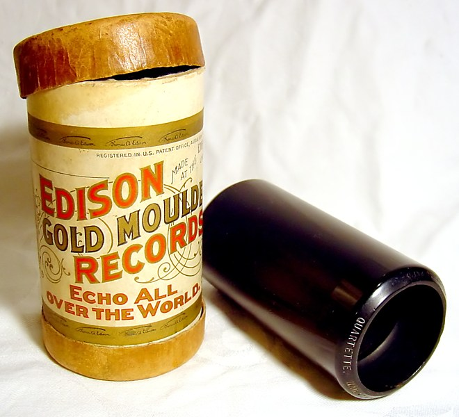
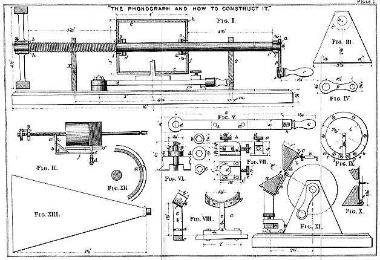
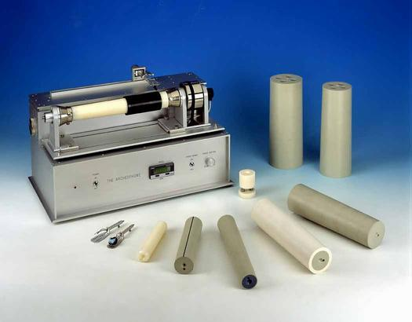
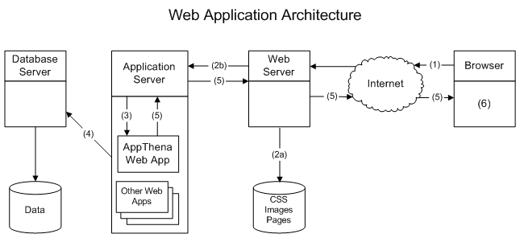
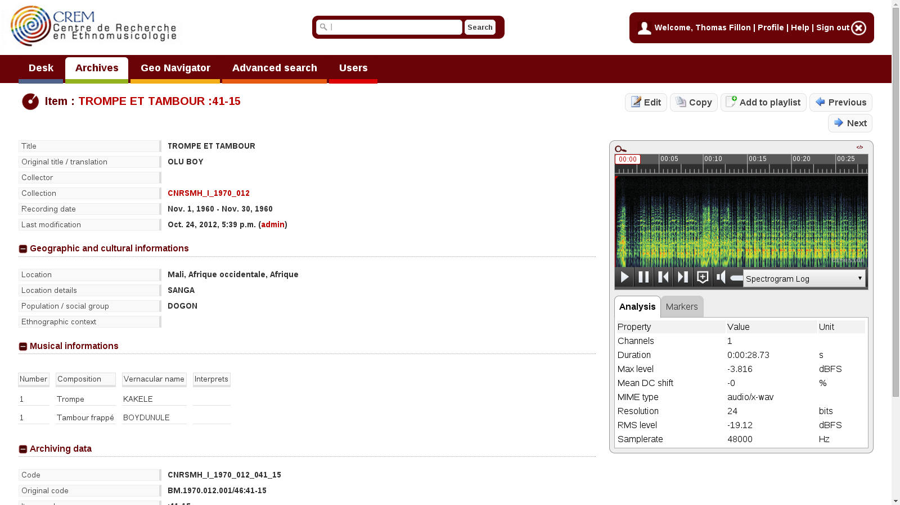
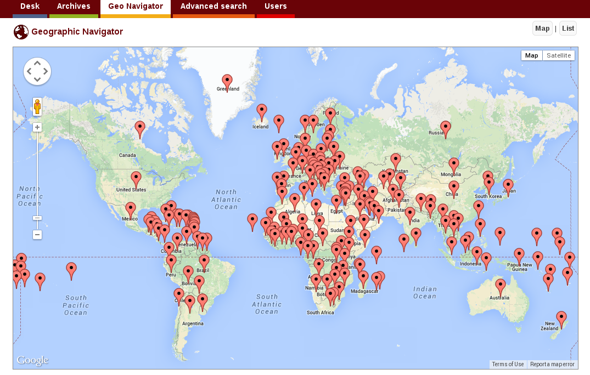
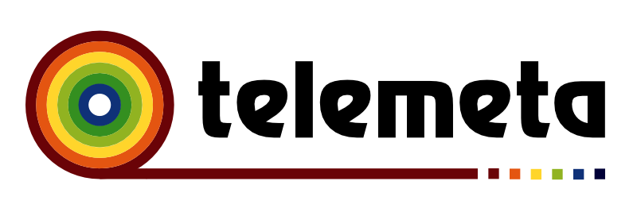

class: center, middle, telemeta-inverse # Open source content management for digital preservation of sound and audiovisual collections <hr> <img src="img/telemeta_logo_wh.png" height="100px" /> ### Dr. Guillaume Pellerin (IRCAM, Paris, France) 27/10/2018 @ UNAM, Mexico City --- class: telemeta # Dr. Guillaume Pellerin <hr> - Eng. of the *Arts et Métiers* french National High School <br> - Master degree *ATIAM* of the *Sorbonne Universités* <br> acoustics, signal theory and computer science applicated to music - Ph.D thesis at the *Sorbonne Universités* <br> non-linear acoustics and computer simulation - Associate professor at *Conservatoire des Arts et Métiers* <br> - Funder, CE|TO of the *Parisson* company <br> - Head of the Web Team at *IRCAM*, Paris, France --- class: telemeta # IRCAM <hr> ## Institut de Recheche et de Coordination Acoustique / Musique .pull-left[ - created in 1977 by Pierre Boulez - research, transmission, production - 100 researchers, 20 sound engineers, 30 administratives - improving co-creation process between composers and researchers - archiving contemporary music ] .pull-right[ .right[] https://www.ircam.fr ] --- class: telemeta-inverse, outline # Outline <hr> <br> 1. Introduction 1. Concepts of multimedia digital content management 1. Open source and methodologies for sustainable archiving platforms 1. Telemeta : an open collaborative multimedia management system for musicology 1. Conclusion --- class: telemeta # Introduction <hr> ## Physical format sustainabilty .pull-left[  Wax cylinder ] -- .pull-right[ <img src="img/EdisonPhonograph.jpg" width="80%"> Phonograph ] --- class: telemeta # Introduction <hr> ## Physical format sustainabilty .pull-left[  Phonograph plan ] -- .pull-right[  The Archeophone ] --- class: telemeta # Introduction <hr> ## From analogous (continous) signal to a digital (discrete) signal .pull-left[ <img src="img/768px-12in-Vinyl-LP-Record-Angle.jpg" width="90%"> ] .pull-right[ <img src="img/768px-Compact_Disc.jpg" width="80%"> ] --- class: telemeta # Introduction <hr> ## In every domain, physical damage will happen and digital is **weak** .pull-left[ .right[] ] .pull-right[ .right[] ] --- class: telemeta # Introduction <hr> ## In every domain, physical damage will happen and digital is **weak** .pull-left[ .right[] ] .pull-right[ .right[] ] --- class: telemeta # Introduction <hr> ## What about the digital revolution? - from a **analogous** *continous* world to a **digital** *discrete* world - from the **shelfs** to the **networks** - from **static** to **dynamic** archiving - from **centralization** to **decentralization** --- class: telemeta # Introduction <hr> ## Some solutions to improve sustainabilty, scalabilty and reliability - to rely on **open standards** not on proprietary formats - **open source** softwares - data and software **replication workflow** (easy with computers) - **publishing** and **sharing** through **collaborative** content management systems (CMS) --- class: center, middle, telemeta-inverse # Concepts of multimedia digital content management --- class: telemeta, tight # Multimedia digital data content management <hr> ## Context - digital & network age - musicologists need music, metadata and search engines - computer scientists need music and semantic datasets ## Challenges - digitization (valorization improve financial support) - big data & accessibility vs. security - open source for computational musicology --- class: telemeta # Multimedia digital data content management <hr> - Multimedia vs monomedia - Data vs metadata - Binary data vs text data - Formats & standards - Frameworks & librairies - Operating systems and infrastructures - User Interface (UI) and User eXperience (UX) - Collaborative workflows - Model - View - Controller (MVC) architecture --- class: telemeta, tight # World Wide Web <hr> .pull-left[ ## http:// - 1989 : Tim Berners-Lee created the World Wide Web at CERN - HTTP : HyperText Transfer Protocol - URL : Uniform Resource Locator - HTML : HyperText Markup Language (hyperlink) - Server / Client Web (browser) ] .pull-right[ ```HTML5 <!DOCTYPE html> <html lang="en"> <head> <meta charset="utf-8"> <title>title</title> <link rel="stylesheet" href="style.css"> <script src="script.js"></script> </head> <body> <!-- page content --> </body> </html> ``` <img src="https://upload.wikimedia.org/wikipedia/commons/thumb/b/b2/WWW_logo_by_Robert_Cailliau.svg/601px-WWW_logo_by_Robert_Cailliau.svg.png" width="50%"> ] --- class: telemeta, tight # W3C <hr> ## World Wide Web Consortium - A member-driven world organization composed of over 460 companies, universities & start-ups - 44 technicals groups, including Working and Interest Groups - Over 6,025 published technical reports, including 386 Web Standards or Recommendations since 1995 - About 291 Community and Business Groups - Near 10,846 active participants - A technical staff composed of 67 people --- class: telemeta, tight # Web application architecture <hr> <center></center> --- class: telemeta # Content Management Systems <hr> ## Required features - User and group functionality - Modularity and extensibility - Compliance with various accessibility frameworks and standards - SEO-friendly URLs for search engines - Install and upgrade wizards - Templating support for changing designs - Integrated audit logs - Integrated and online help --- class: telemeta # Content Management Systems <hr> ## Existing softwares - Wordpress - Drupal - Joomla - Mediawiki - Plone - ... https://en.wikipedia.org/wiki/List_of_content_management_systems --- class: telemeta # Content Management Systems <hr> .left-column[ ## Custom approach - Data modelization - Frameworks - Librairies - Development - Mastering ] .right-column[  ] --- class: center, middle, telemeta-inverse # Open source and methodologies for <br> sustainable archiving platforms --- class: telemeta, tight # Open source <hr> .pull-left[ ## FLOSS - **F**ree, as in speech - **L**ibre, as in french - **O**pen, as in bar - **S**ource, as in code - **S**oftware, as in everywhere ## Open everything - open softwares - open hardwares - open systems - open formats ] .pull-right[ ## Challenges - reproducibility - sustainabilty - publication - valorization - collaboration - quality ] https://developer.mozilla.org/en-US/docs/Web/HTML/Supported_media_formats --- class: telemeta, tight # Open Source and libre softwares <hr> ## Challenges - code = text - build a universal **common** software resource - use, re-use, fork, modify, hack - readibility, security - initiate collaborations ## Licences - GNU Public Licence - BSD Licence https://choosealicense.com/licenses/ https://en.wikipedia.org/wiki/Comparison_of_free_and_open-source_software_licenses --- class: telemeta, tight # Open Source software repositories <hr> ## SourceForge https://sourceforge.net ## GitHub (not open source!) https://github.com ## GitLab (open source) https://gitlab.com ## Software Heritage https://www.softwareheritage.org/ --- class: telemeta, tight # Open architecture <hr> .pull-left[ ## OS - Linux (Debian, Ubuntu, Mint, CentOS, ....) - Docker ## Database - MySQL (Oracle), MariaDB - PostgreSQL ## Web server - Apache - Nginx ] .pull-right[ ## Backend framework - Symphony (PHP) - Rails (Ruby) - Django (Python) ## Frontend framework - ReactJS (JavaScript) - AngularJS (JavaScript) - VueJS (JavaScript) - Pure HTML + CSS + JavaScript ! ] --- class: telemeta, tight # Open Formats <hr> .pull-left[ ##Lossless audio - WAV, BWF - AIFF - FLAC ###Lossy audio - OGG Vorbis - OPUS - not MP3 (not libre!) ] .pull-right[ ## Images - JPEG - PNG ## Video - WebM (VP8 | VP9 + OGG Vorbis | Opus) - (MP4) (x264 + MP3 or AAC) ## Strutured data - XML - JSON - HDF5 ] --- class: telemeta, tight # Methodologies and workflows <hr> ## Challenges - development - hosting - replication and storage - feedback, reviews and issues - documentation -- ## Solutions - development : shared repositories - hosting : 3 instances : development / staging / production - replication and storage : at least 2 external backups > **DB + media, app + settings** - feedback, reviews and issues : project management system - documentation : shared --- class: center, middle, telemeta-inverse # Telemeta : an open collaborative multimedia management system for musicology --- class: telemeta # Telemeta <hr> ##Short story - 2007 : Telemeta = Parisson + CREM (archives sonores du CNRS / Musée de l'Homme) - 2010 : TimeSide audio enfine separation as a autonomous library - 2011 : Telemeta release v1.0 and migration of http://archives.crem-cnrs.fr/ - 2013 : DIADEMS project (French Research National Agency) - 2015 : TimeSide API and server prototype - 2016 : WASABI Project (ANR Générique) - various related projects.... --- class: telemeta, tight # Telemeta - Features <hr> - Secure archiving, editing and publishing of audio files over internet. - Pure HTML web user interface including dynamical forms and smart workflows - "On the fly" audio analyzing and transcoding thanks to TimeSide - Smart dynamical and skinnable audio player with annotations - Collaborative indexing with semantic ontologies and timecoded markers - Multi-format support : FLAC, OGG, MP3, WAV, MP4, WebM (video) and more - User management with individual desk, lists, profiles and accesss rights - Playlist management for all users with CSV data export - Geo-Navigator for audio geolocalization - High level search engine - DublinCore compatibility, OAI-PMH data provider - RSS feed generators - XML and ZIP serialized backups - EPUB3 "audio book" collection exporter - SQLite, MySQL, PostgreSQL or Oracle DB backends - Multi-language support (now english and french) - Run on any OS --- class: telemeta # Telemeta <hr> <center></center> --- class: telemeta # Telemeta CREM <hr> <center></center> --- class: telemeta, tight # Telemeta ecosystem <hr> ## Resources - http://telemeta.org - https://github.com/Parisson/Telemeta - https://github.com/Parisson/Telemeta-doc - https://github.com/Parisson/TimeSide - https://archives.crem-cnrs.fr/ ## Ecosystem - 20 public partners (research laboratories, digital humanities organization, governments) - 15 historical developers - 6000 commits - 500 users (CREM) - and thousands of developers! (open source community) --- class: telemeta #Telemeta architecure <hr> .center-50[  ] --- class: telemeta #Telemeta / TimeSide integration <hr> .pull-left[  ###Collaborative multimedia asset management system https://github.com/Parisson/Telemeta ###MIR + Musicology + Archiving = MIRchiving ! ###>>> active learning ] .pull-right[ .right[] ] --- class: telemeta, tight # TimeSide <hr> ##open audio processing framework for the web ##Goals * **Do** asynchronous and fast audio processing with Python, * **Decode** audio frames from **any** audio or video media format into numpy arrays, * **Analyze** audio content with some state-of-the-art audio feature extraction libraries like Aubio, Yaafe and VAMP as well as some pure python processors * **Visualize** sounds with various fancy waveforms, spectrograms and other cool graphers, * **Transcode** audio data in various media formats and stream them through web apps, * **Serialize** feature analysis data through various portable formats, * **Playback** and **interact** **on demand** through a smart high-level HTML5 extensible player, * **Index**, **tag** and **annotate** audio archives with semantic metadata * **Deploy** and **scale** your own audio processing engine through any infrastructure --- class: telemeta #TimeSide <hr> ##open audio processing framework for the web https://github.com/Parisson/TimeSide ##Use cases - Scaled audio processing (filtering, transcoding, machine learning, etc...) - Audio process prototyping - Audio dynamic visualization - Automatic segmentation and labelling synchronized with audio events - Collaborative annotation - Audio web services --- class: telemeta #TimeSide <hr> .pull-left-30[ ## Gold rule Do not rely on format! ##Architecture - plugin architecture - streaming oriented core engine - data persistence ] .pull-right-70[ .right[] ] --- class: telemeta #TimeSide <hr> .pull-left-30[ ##Architecture - streaming oriented core engine - data persistence ] .pull-right-70[ .right[] ] --- class: telemeta, tight #TimeSide - Plugins <hr> https://github.com/Parisson/TimeSide https://github.com/DIADEMS/timeside-diadems .pull-left[ - FileDecoder - ArrayDecoder - LiveDecoder - VorbisEncoder - WavEncoder - Mp3Encoder - FlacEncoder - OpusEncoder - Mp4Encoder - AacEncoder ] .pull-right[ - Aubio (Temporal, Pitch, etc) - Yaafe (graph oriented) - librosa - **VampPyHost** - **Essentia bridge** - **Speech detection** - **Music detection** - **Singing voice detection** - **Monophony / Polyphony** - **Dissonance** - **Timbre Toolbox** - etc... (experimental) ] --- class: telemeta #TimeSide <hr> .pull-left-30[ ##Resful API http://timeside-dev.telemeta.org/timeside/api/ - based on Django Rest Framework (extensible) - streaming oriented (audio and data) - user presets ] .pull-right-70[ .right[] ] --- class: telemeta #TimeSide <hr> .pull-left-30[ ##Player (v1, SoundManager2) - on demand processing - simple marker annotation - bitmap image cache only ] .pull-right-70[ .right[] ] --- class: telemeta .pull-left[ #TimeSide ##Player v2 (Web Audio, prototype) ###Assumption : NO audio duration limit ###Constraint : user data persistence - zooming - packet streaming (audio & data) - multiple user annotations and analysis tracks - dynamic data rendering ] .pull-right[ .right[] ] --- class: center, middle, telemeta # Some research projects based on Telemeta --- class: telemeta, tight # DIADEMS project <hr> ##Description, Indexation, Access to Sound and Ethnomusicological Documents - 36 month reearch project from 2012 to 2016 - 850k€ project granted by the french Research National Agency https://www.irit.fr/recherches/SAMOVA/DIADEMS/en/welcome/ ##Consortium - CREM : Ethnomusicology Research Center (Paris, France) - LAM : Equipe Lutherie, Acoustique et Musique de Sorbonne Universités (Paris, France) - MNHN : National Museum of Biology, Paris, France) - IRIT : Institut de Recherche en Informatique de Toulouse (Toulouse, France) - LIMSI : Laboratoire d'Informatique pour la Mécanique et les Sciences de l'Ingénieur (Orsay) - LABRI : Laboratoire Bordelais de Recherche en Informatique (Bordeaux, France) - Parisson : Open development agency for audio science and arts (Paris, France) --- class: telemeta, tight # DIADEMS project <hr> ### Analyzers https://github.com/ANR-DIADEMS/timeside-diadems ### Platform http://diadems.telemeta.org ### Examples http://diadems.telemeta.org/archives/items/CNRSMH_I_2013_201_001_01/ http://diadems.telemeta.org/archives/items/CNRSMH_I_2000_008_001_04/ --- class: telemeta, tight #WASABI project <hr> ##Web Audio and SemAntic in the Browser for Indexation - 42 months from 2016 Q4 to april 2020 Q2 - 750 k€ project granted by the french Research National Agency ## Consortium - INRIA (I3S) - IRCAM (MIR + Musicology + Library) - Deezer R&D - Radio France Library - Parisson --- class: telemeta #WASABI project <hr> ##Objectives - Propose some new methodologies to index music in the web and audio context - Link semantics (linked metadata) + acoustics (MIR data) + machine learning - Develop and publish some open source web services through original APIs ##Use cases - augmented web music browsing - data journalism - music composing through big data - plagiarism or influence detection --- class: telemeta, tight # Conclusion & perspectives <hr> ## Some general lessons after 12 years of various projects - **Simplicity** is better than complexity (KISS principle) - **Modularity** is only accessible with a flexible and readable object oriented language (thanks Python!) - **Models and workflows** are more important than technologies - Good platforms rely on **standards**, not on (custom) formats - Good **workflows** are defined by the users themselves through feedback and interations - Prototyping and **unit testing** are some crucial parts of the development process - The **Open Source** ecosystem provides some tremendous possibilities to develop, deploy and scale a platform project - **Publishing code** improve the quality (reviews and interations) --- class: telemeta # Conclusion & perspectives <hr> ## What all partners need for digital preservation - stability (infra and softwares) - standards - shared workflows between all users - easy installation and reproducible packaging (**Docker**) - choose the right licenses - more documentation and recommandations - sustainable and financed hosting --- class: telemeta # Conclusion & perspectives <hr> ## Next challenges - more generic data models with more modularization - open data (API, SPARQL) - linked data (semantic web, ontologies, RDF) - Web Audio API (Web Video ?) - collaborative annotation + participative sciences - more interfaces for data exploration use cases - resolve copyright rules for specific use cases, i.e. research - international support for developing, hosting, storing and sharing --- class: center, middle, telemeta # Gracias! <hr> ## Dr. Guillaume Pellerin, IRCAM, France ###guillaume.pellerin@ircam.fr ## @yomguy ## @telemeta